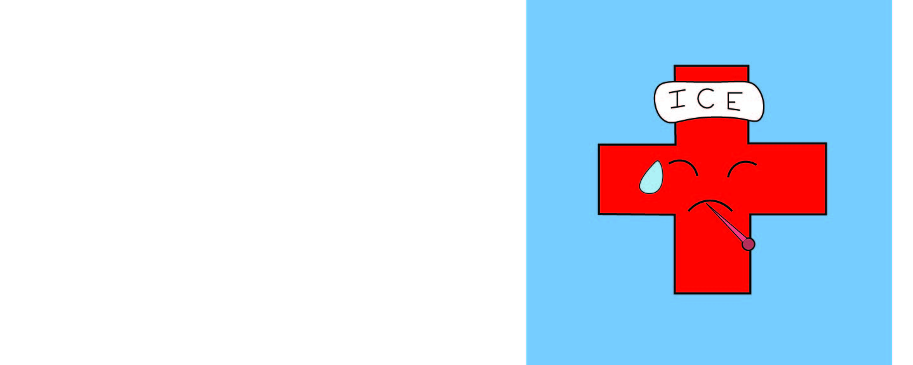

<html>
    <link rel="stylesheet" href="styles2.css">
</html>
<p></p>
<ul>
    <li>Chemicals used in crops leads to health issues for consumers</li>
    <li>Since food is overly priced, people have to opt for cheaper alternatives</li>
    <li>These cheaper alternatives, have little to no health benefits</li>
</ul>